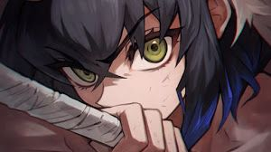
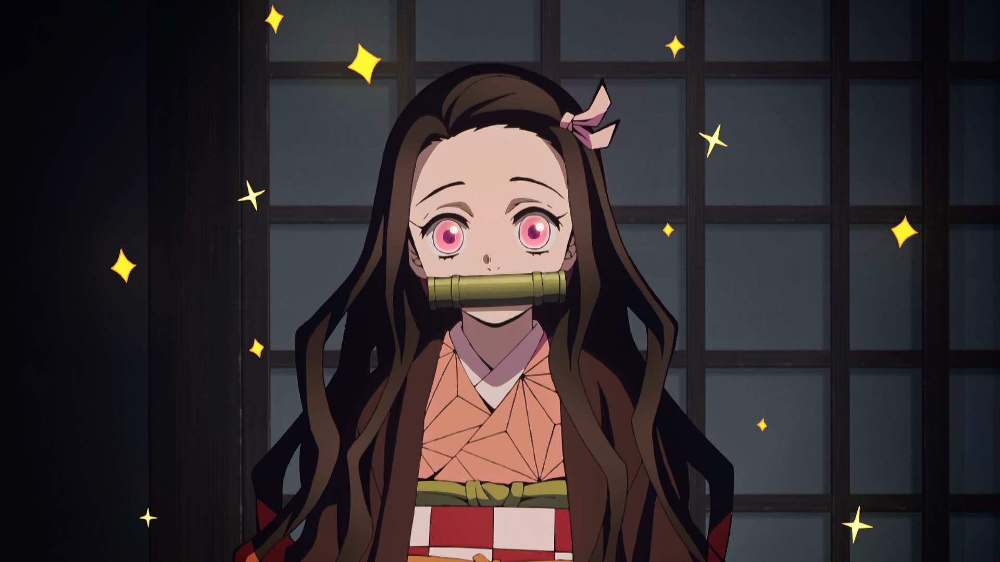
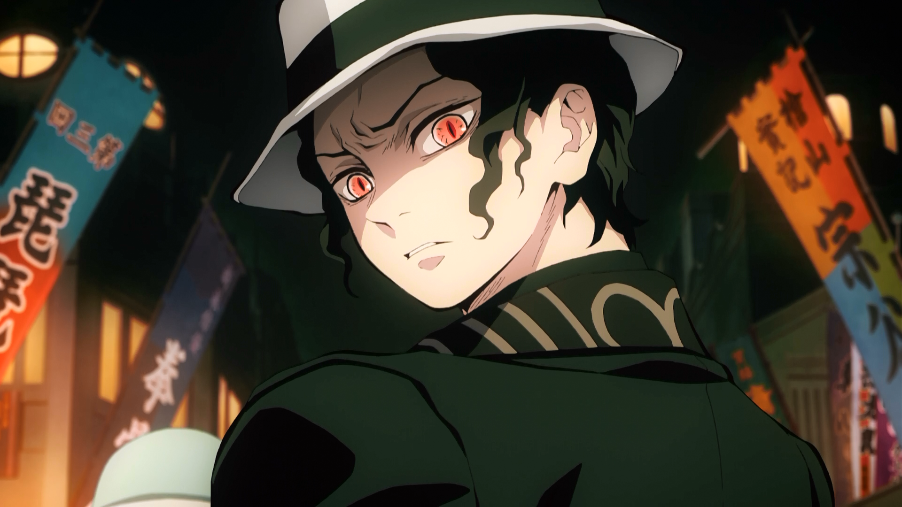

Personnage
Voici une présentation des personnage suivant :
- Tanijro
- Zenitsu
- Inozuke
- Nezuko
- Muzan
Tanjiro
perso princiaple, C'est un garçon au grand cœur Son optimisme sans fin et sa nature simple rendent sa compagnie le plus souvent agréable pour les autres, tout en le mettant néanmoins en confrontation avec certaines personnalités

Il a appris le style d'épée « souffle de l'eau » mais se diversifie depuis ; il a commencé à utiliser la « Danse du dieu du feu » qu’il a hérité de son père comme forme de combat plus puissante. et, même en faisant ce qu'il a à faire sans faillir, il éprouve souvent de l'empathie pour les démons éliminés ainsi que leurs victimes.
Zenitsu
Petit fils de l'ancien pilier de la foudre Il peut sembler fragile, constamment effrayé mais il devient une tout autre personne quand il s'endort lors d'un combat, devenant aussi sûr de lui et déterminé que capable des plus grandes prouesses.
Inozuke
Guerrier uniquement obsédé par le combat et l'idée de se dépasser pour devenir le plus fort, il est capable de se battre au corps-à-corps aussi bien armé qu'à mains nues maniant deux lames dentelées et un style personnel, le « souffle de la Bête » Bien qu'il soit fonceur et ne paraisse pas non plus très futé, il a fait toutefois ses preuves maintes fois au combat.
Nezuko
Sœur de Tanjirô, Elle est la seule survivante de leur famille après l'attaque d'un démon, cependant, elle a été transformée en un démon. Néanmoins, elle conserve ses souvenirs et les sentiments envers son frère qui la retient de ses impulsions de démon. Elle l’accompagne et est une alliée non négligeable.
Muzan
Muzan Antagoniste de la série il a transformé Nezuko en un démon et tué la famille Kamado. Il vit au sein de la société humaine en se faisant passer pour un humain afin. Âgé d'un millénaire, il serait le premier démon, et l'ancêtre de la plupart des autres démons. Il est nettement plus puissant que toutes les lunes démoniaques. Sa seule vraie faiblesse est le soleil…
